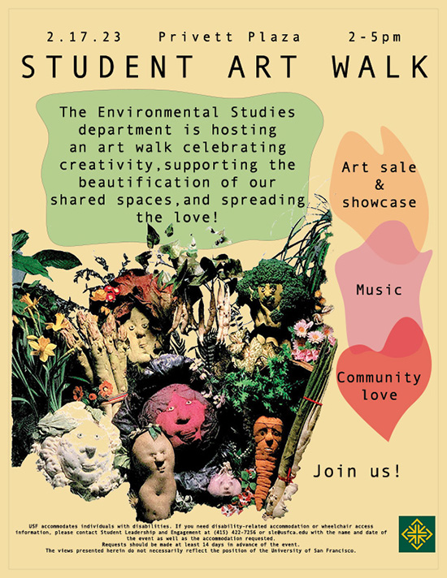
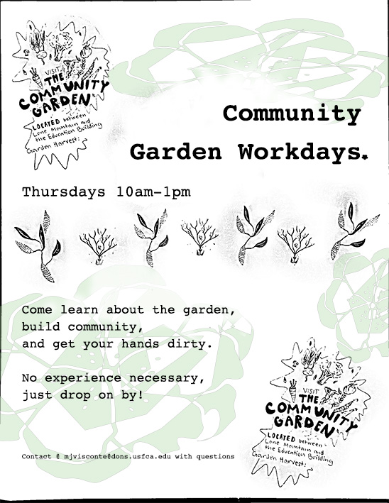
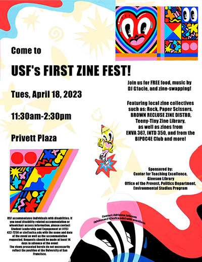
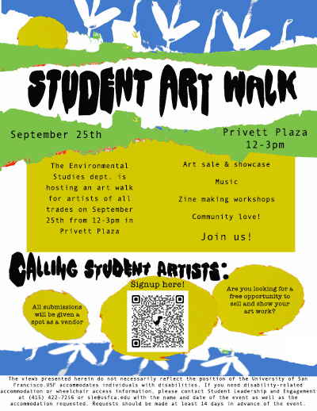
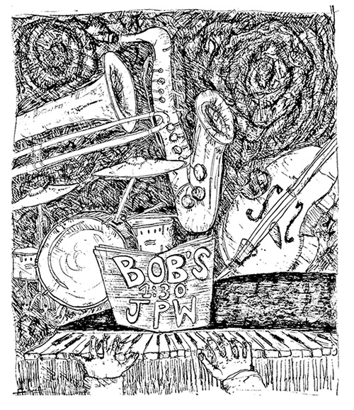
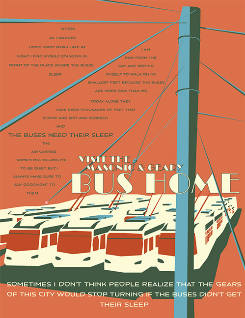
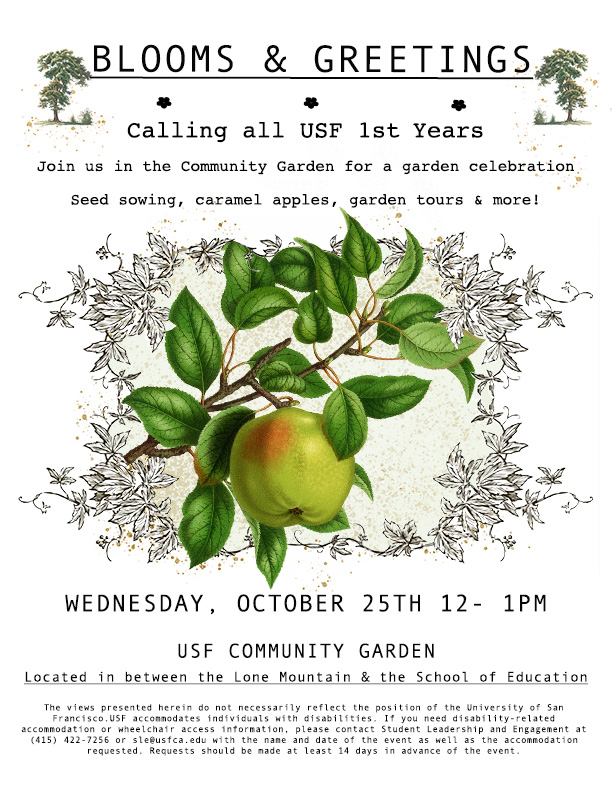
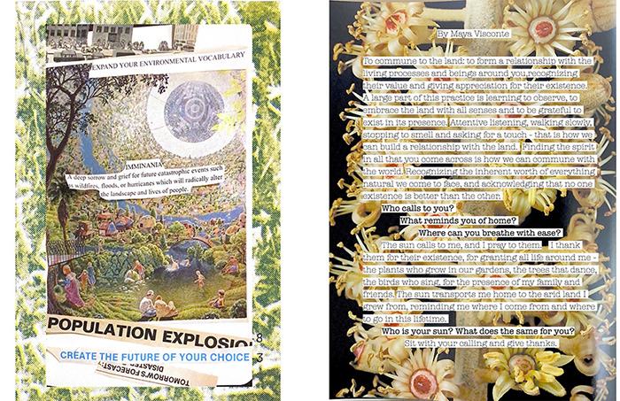

A collection of flyers designed for events at USF. These flyers were all used for outreach, each one designed to be eye catching, using mediums such as scanned cyanotype prints, prints of gardening manuals, gouache paint, and hand drawn illustrations.

Student Art Walk
February, 2023
Adobe InDesign; scanned gardening manuals

Garden Workdays
October, 2023
Adobe Photoshop; scanned ballpoint drawings

Zine Fest
April, 2023
Adobe Indesign, Photoshop

Student Art Walk
April, 2023
Adobe Indesign, Photoshop

Jazz Show
August, 2021
Ballpoint pen

The Bus Home
April, 2022
Adobe Illustrator

Freshman Garden Mixer
October, 2023
Adobe Photoshop

Zine Page
February, 2023
Adobe Indesign, Photoshop, scanned drawings, photo collages
Click here to read issue #2 of Roots & Webs, a zine made by me, Environmental Studies student Maya Visconte, and contributing students. Incorporating our backgrounds, cultures, and ancestral knowledge, our roots, with our connections of the present webs, this zine celebrates the creativity within community connection activism.